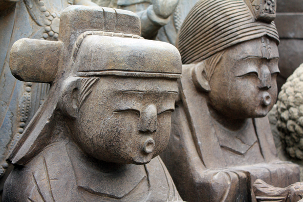
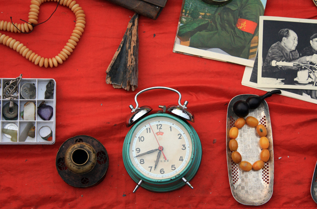
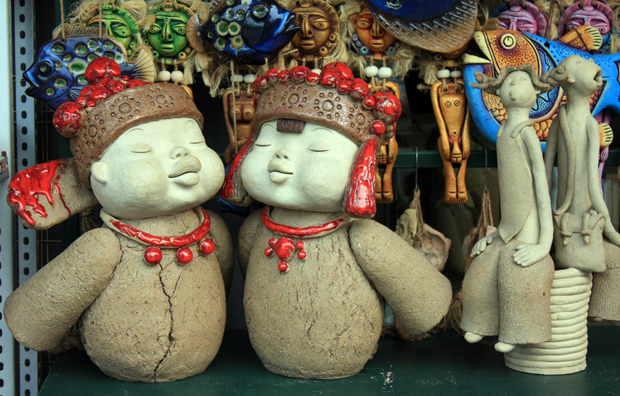
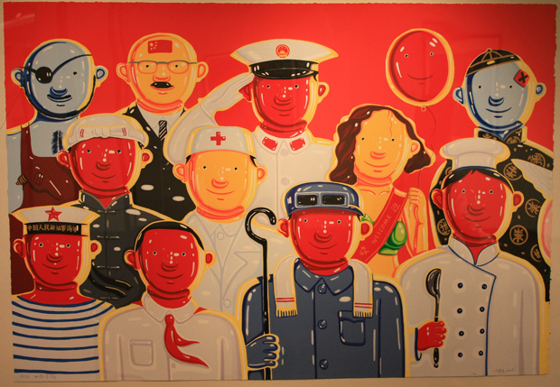
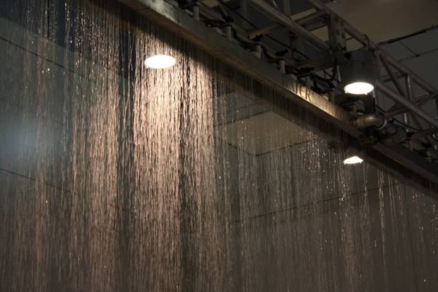

长假之前，上网遍查各路攻略，计划好了四个不同的出游目的地，心想排除掉各种意外，总有一处能够成行吧。谁料订票时被告知，国庆期间这四个地方所有的票都没了。 一下子没地方可去，倒也一点没觉得失望，甚至一丝惆怅也没有，反而突然轻松不少，时间一下子变多了，想到可以很闲散地过完这个最长的假期，就莫名的快乐起来。 第一天就走残了，从潘家园到迪卡侬，再到新光天地。潘家园已经记不起哪年去过，印象中的样子也模糊地只剩下概念。我记性一直不好，经常会区分不出哪个是真实的记忆，哪个是梦见的样子。潘家园还是很值得一逛，好多复古的小货一路走着，一路看着也很有味道，当然这是需要淘宝的地方，想要买真正的古董货，还得懂 行才行，我们也就逛个新鲜好玩。看见几家卖黑胶的，正想着能不能把家里的CD拿来摆个地摊，抬头瞅见市场公告牌上写着：“严禁售卖音像制品”。 自从搬离红领巾桥那块，就很少再去迪卡侬和新光天地。住东四环的那段日子，俩人时不时会去新光天地逛逛。那会新光的顶层和地下有不少有趣的小玩意，顶层还有个艺术馆，经常有些不知名的画展，曾经写过篇关于小破孩画展的日志就是那儿来的。商场人永远不会太多，很适合我们去window shopping。在微博上看见有朋友写新光天地有好吃的肠粉，结果去那儿才知道是商场那种一小格一小格不同商家的食堂，一小碟肠粉要卖15块钱，感叹着在北京，贫民化的广东小吃都变成了小资食品，真希望赶紧到春节，这样又能回广东吃街头小吃了。 潘家园有若干大大小小的石像和佛像售卖

地摊上全是各种古旧的玩意

泥塑很像以前在798看到过的一家，名字不记得

新光天地画廊的彩画儿

新光的水幕，底下铺着吸水的垫子，水就不会四处乱溅
